Lograr la igualdad de género y empoderar a las mujeres y niñas.
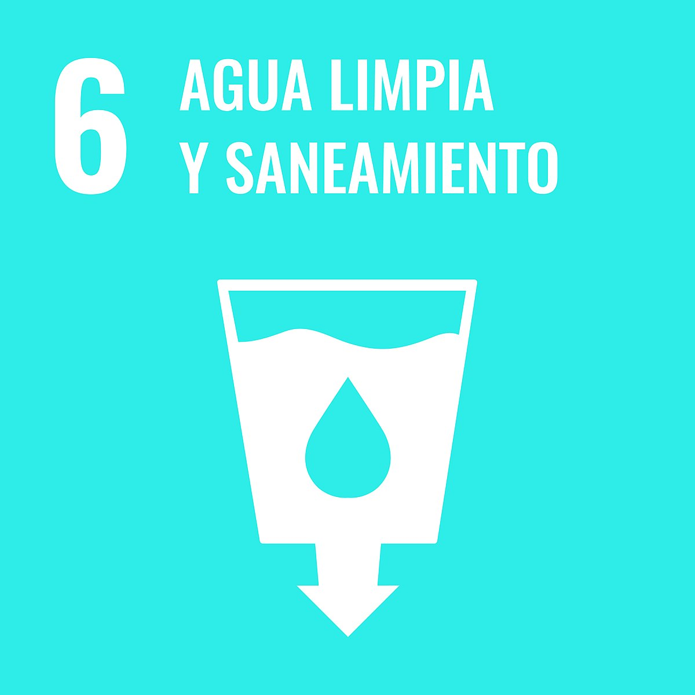
Agua limpia y saneamiento
Garantizar agua limpia y accesible, así como el saneamiento.
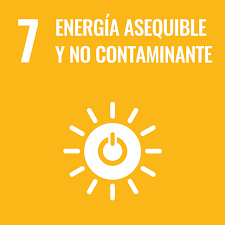
Energía asequible y no contaminante
Asegurar acceso a energía sostenible para todos.
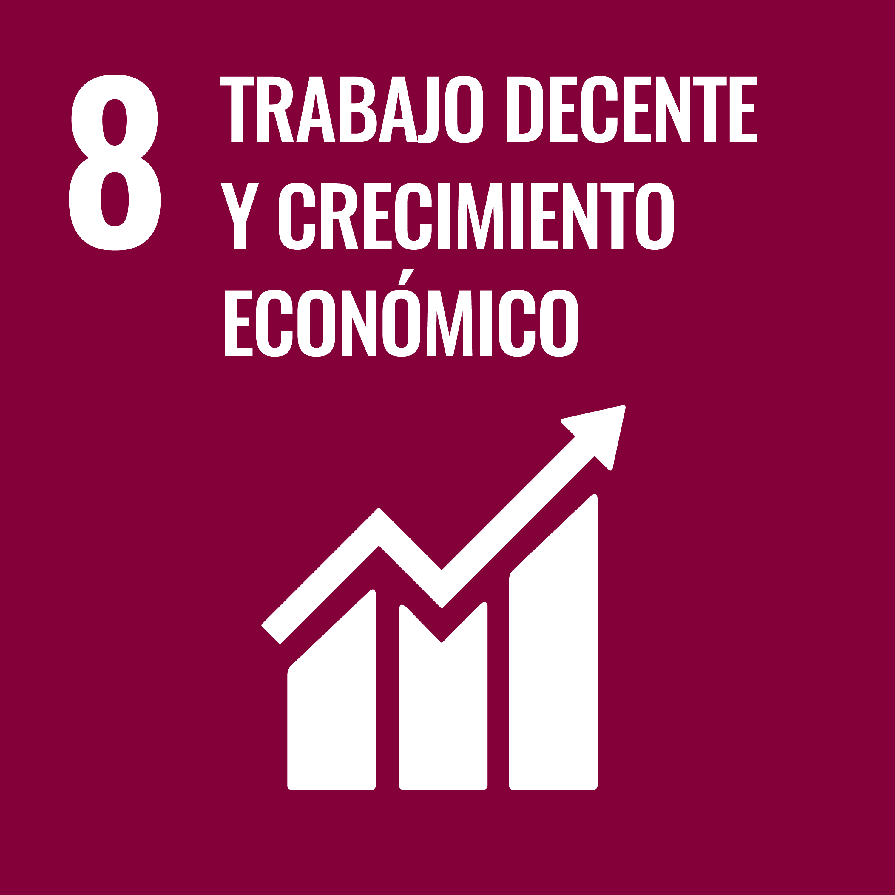
Trabajo decente y crecimiento económico
Promover empleo digno y crecimiento inclusivo.
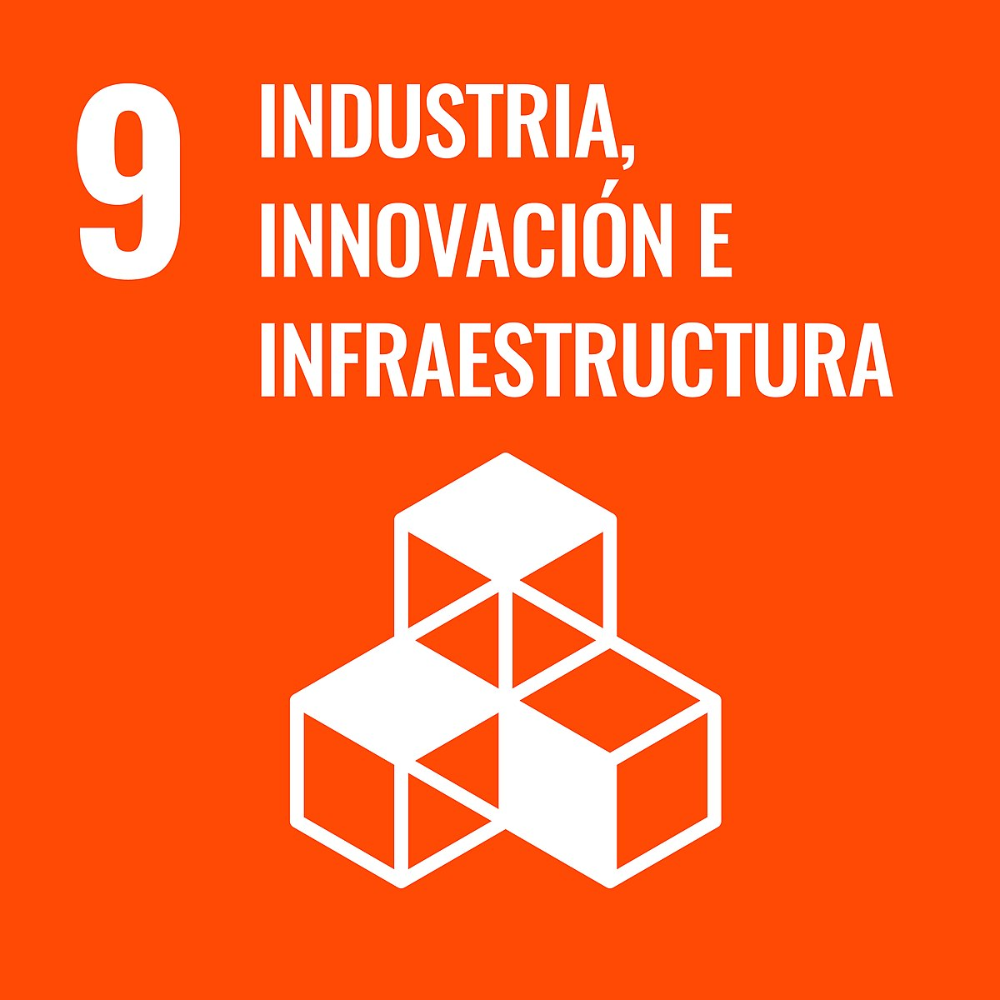
Industria, innovación e infraestructuras
Desarrollar infraestructuras resilientes y sostenibles.
Reducción de las desigualdades
Reducir desigualdades entre países y dentro de ellos.
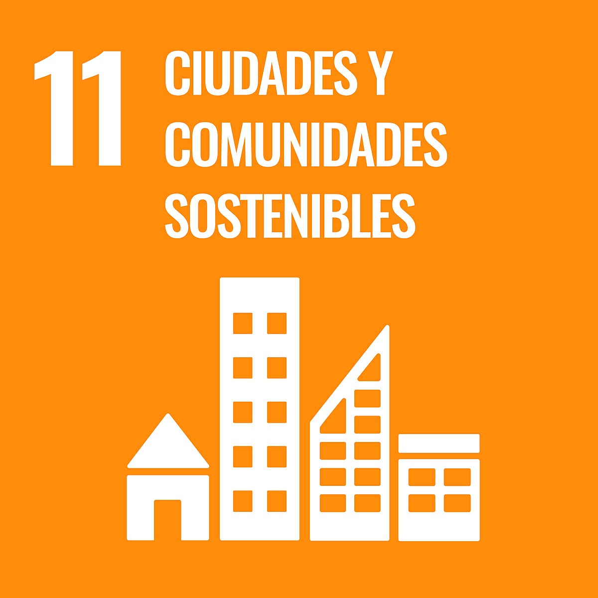
Ciudades y comunidades sostenibles
Hacer las ciudades inclusivas y sostenibles.
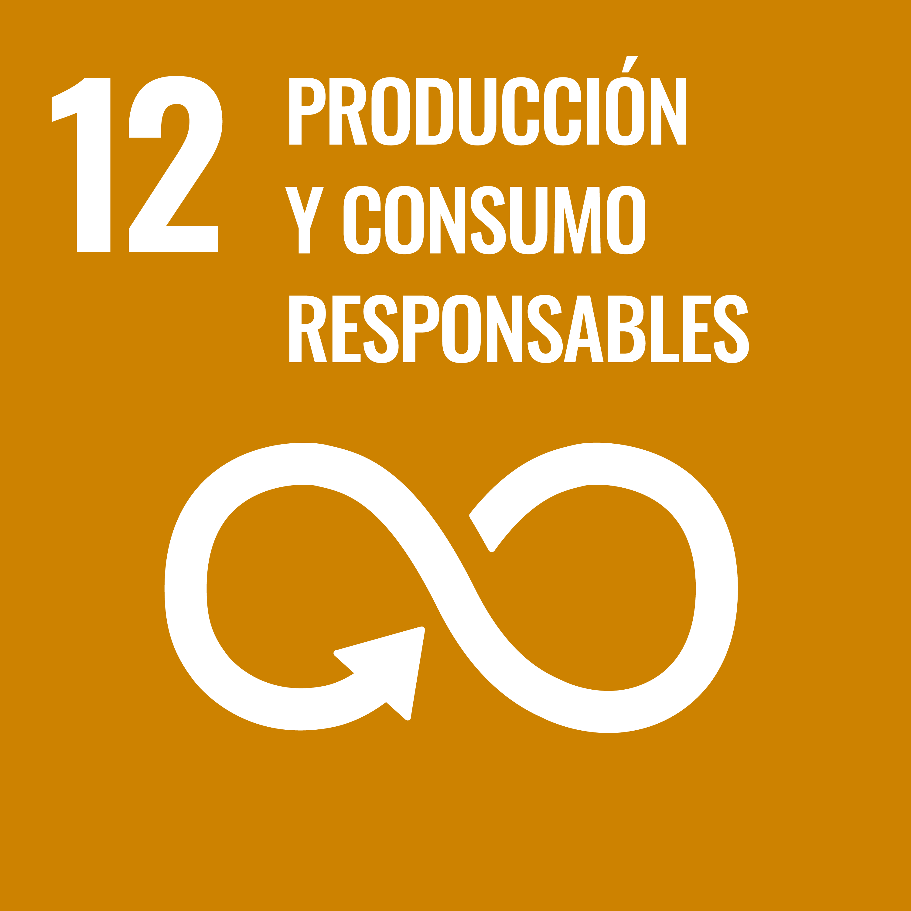
Producción y consumo responsable
Garantizar patrones sostenibles de consumo y producción.
Acción por el clima
Adoptar medidas urgentes para combatir el cambio climático.
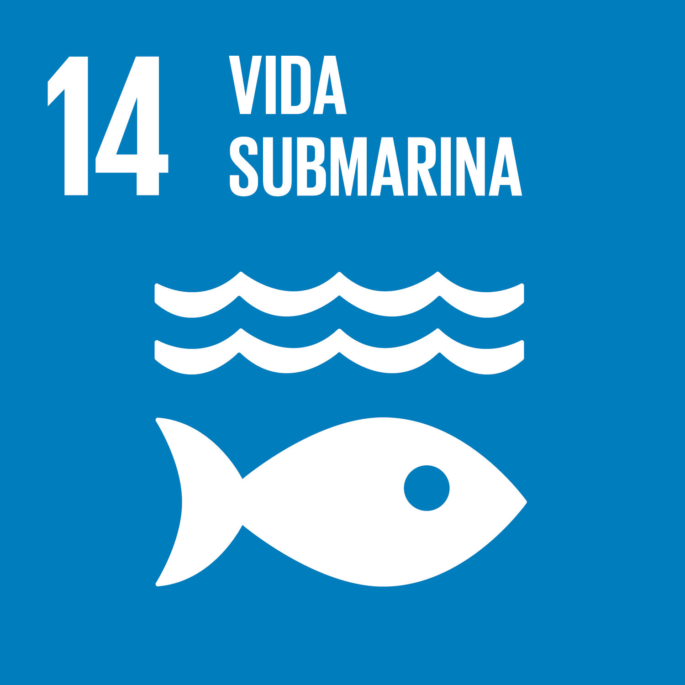
Vida submarina
Conservar los océanos, mares y recursos marinos.
Vida de ecosistemas terrestres
Proteger y restaurar ecosistemas terrestres.
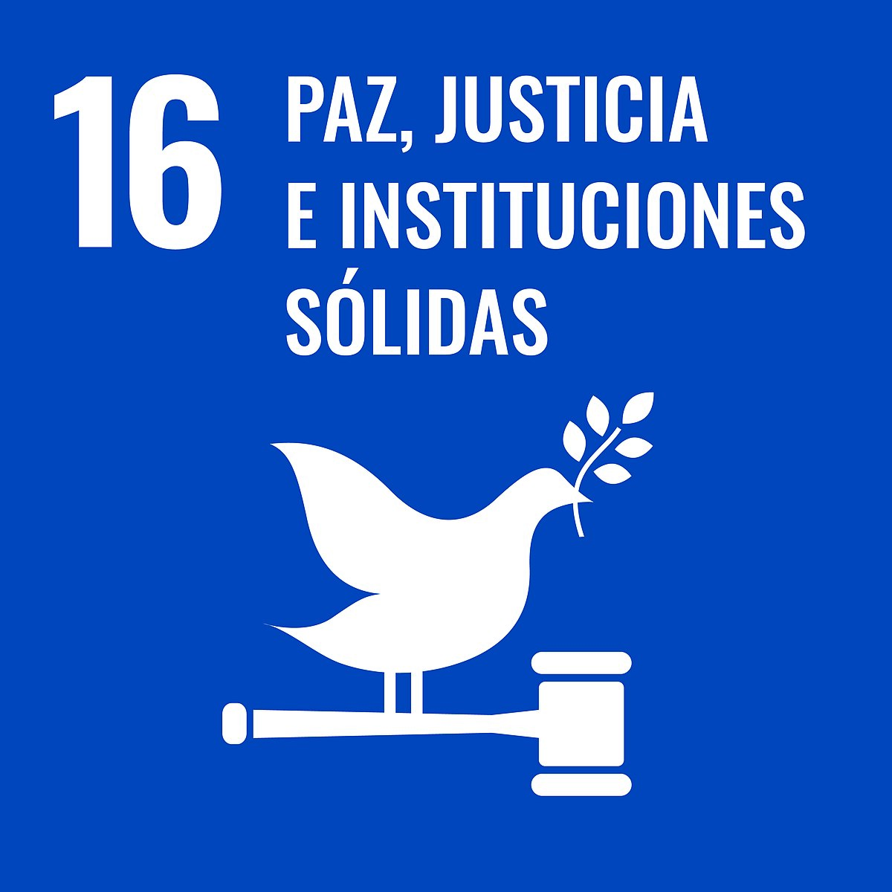
Paz, justicia e instituciones sólidas
Promover sociedades pacíficas y con instituciones inclusivas.
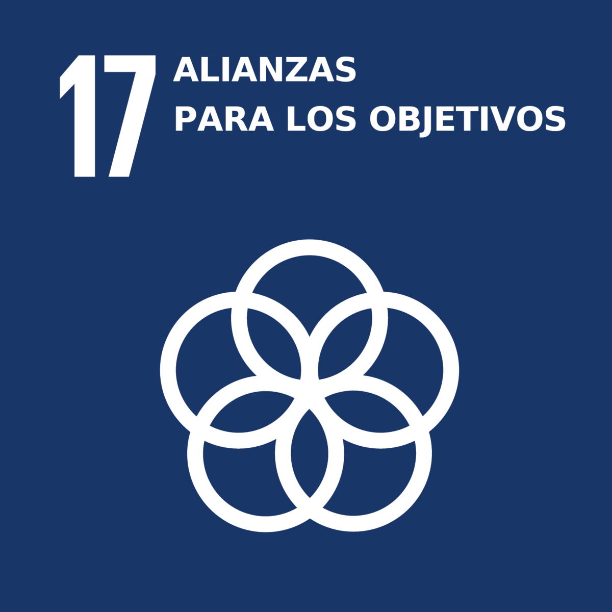
Alianzas para lograr objetivos
Fortalecer alianzas globales para el desarrollo sostenible.
×
Fin de la pobreza
Erradicar la pobreza extrema para todas las personas en el mundo, un grado de desamparo que se cuantifica en aquellas personas que no logran superar los 1,25 dólares de ingresos al día.
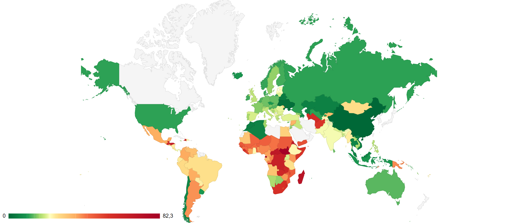
Porcentaje de personas en riesgo de pobreza 2023
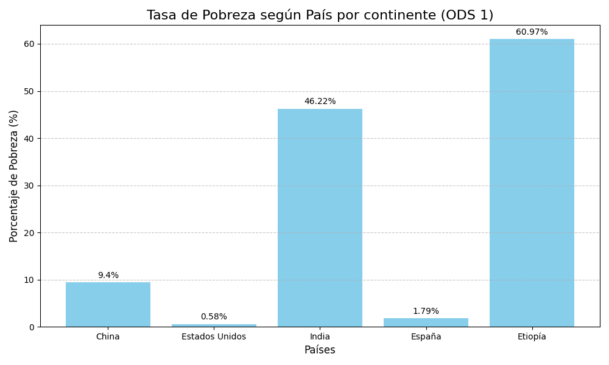
Gráfico generado con Python (Biblioteca matplotlib)
Educación de calidad
La educación es la base para mejorar la vida y el desarrollo sostenible, porque el acceso a la educación inclusiva y equitativa puede ayudar a la población local con las herramientas necesarias para desarrollar soluciones innovadoras a los problemas más grandes del mundo, explican los motivos de este ODS. De aquí a 2030, todos los niños y niñas deberían acceder y completar la enseñanza primaria y la secundaria.
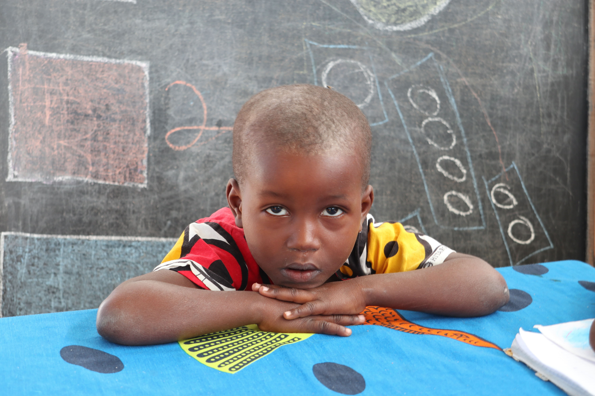
Salud y bienestar
El ODS de garantizar una vida sana y el bienestar tiene como una de sus metas reducir la tasa mundial de mortalidad materna a menos de 70 por cada 100.000 nacidos vivos en 2030, mediante mejor asistencia en los partos, entre otras medidas sanitarias.
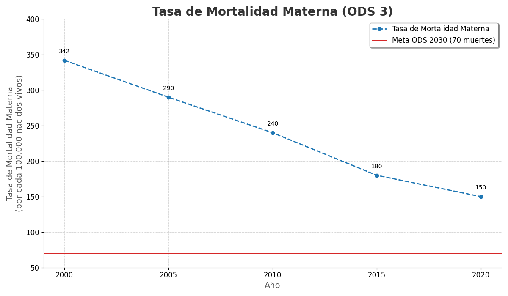
Gráfico generado con Python (Biblioteca matplotlib)
Hambre cero
Poner remedio al hambre y mejorar la alimentación en el planeta mediante el desarrollo sostenible y las inversiones necesarias en recursos agrarios y agropecuarios y la protección de bosques, océanos, agua y biodiversidad. También se busca lograr la seguridad alimentaria, mejorar la nutrición y promover la agricultura sostenible, algo que pasa, entre otras cosas, por favorecer a los productores locales y mantener la diversidad genética de semillas, plantas y animales.
Indicador
Descripción
Dato Ejemplo (Global)
Meta del ODS 2
Población en Inseguridad Alimentaria
Porcentaje de personas sin acceso regular a alimentos suficientes.
29.3% (2021, según FAO)
0% para 2030
Índice de Subalimentación (%)
Proporción de la población que no consume las calorías mínimas necesarias.
9.8% (2021, según FAO)
0% para 2030
Desnutrición Infantil (%)
Porcentaje de niños menores de 5 años con peso bajo para su edad.
22% (2021, según UNICEF)
Reducir a la mitad para 2030
Tasa de Anemia (%)
Prevalencia de anemia en mujeres embarazadas y niños menores de 5 años.
40% (mujeres embarazadas)
Reducir significativamente
Producción Agrícola per Cápita
Cantidad de alimentos producidos por persona en toneladas métricas.
2.5 TM/persona (aprox.)
Incrementar sosteniblemente
Cambio Climático (Impacto)
Porcentaje de pérdidas en cultivos debido a sequías, inundaciones u otros fenómenos climáticos.
15% pérdidas agrícolas
Mitigar impacto negativo
Programas Actuales
Iniciativas globales para combatir el hambre.
Ej.: Programa Mundial de Alimentos (PMA)
Fortalecer alianzas globales
Datos según FAO, UNICEF, World Bank Data y PMA
Igualdad de género
Los Objetivos de Desarrollo del Milenio hicieron que se dieran avances en la igualdad entre géneros de 2000 a 2015. Sin embargo, hoy, una de cada cinco mujeres y niñas entre 15 y 49 años afirmó sufrir violencia física o sexual. Este ODS pretende acabar con la discriminación sobre las mujeres, aplicando marcos legales y políticas de empoderamiento.
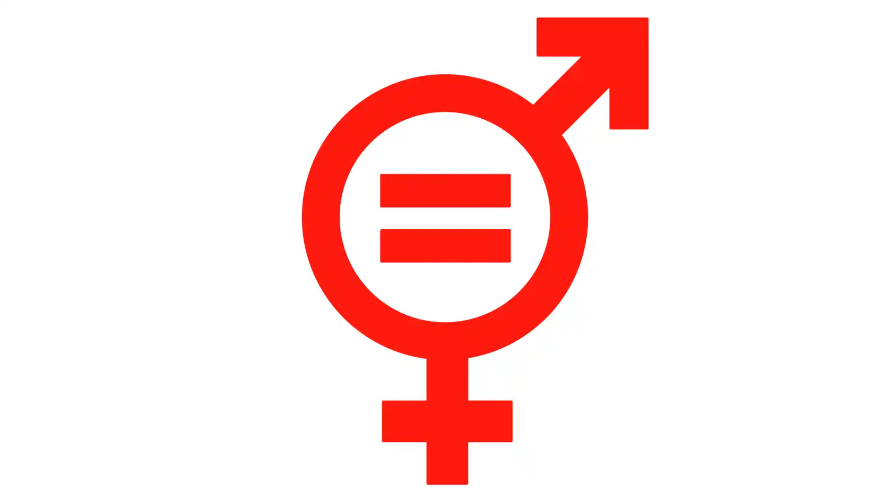
Agua limpia y saneamiento
Unos 2.200 millones de personas carecen de agua potable y 4.200 millones, de saneamiento, según la ONU. Entre las metas de este ODS, por ejemplo, se encuentra el acceso universal y equitativo al agua potable con un precio asequible de aquí a 2030. No solo para el consumo, sino también que las poblaciones de los países en desarrollo logren un acceso a servicios de saneamiento e higiene adecuados. Sobre todo, porque para 2050 la ONU espera que al menos un 25% de la población mundial viva en un país afectado las sequías, un hecho que recrudece el hambre y la desnutrición.
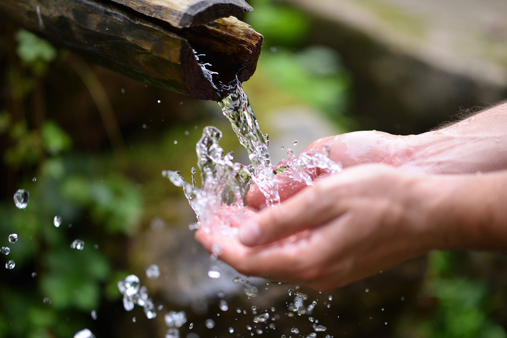
Acceso al agua potable: Garantizar que todas las personas tengan acceso continuo a agua potable limpia y segura
Saneamiento e higiene: Proveer servicios de saneamiento e higiene adecuados y equitativos
Calidad del agua: Reducir la contaminación y tratar las aguas residuales de forma segura
Uso eficiente del agua: Mejorar la eficiencia del uso del agua en todos los sectores
Gestión hídrica: Implementar la gestión integrada de recursos hídricos en todos los niveles
Cooperación internacional: Fortalecer el apoyo global para mejorar la gestión del agua en países en desarrollo
Participación comunitaria: Involucrar a las comunidades locales en la gestión del agua y el saneamiento
Energía asequible y no contaminante
Este ODS hace hincapié en el acceso universal de la energía como desafío para el empleo, la seguridad y el cambio climático. Las metas de este objetivo se orientan a conseguir dicho objetivo aumentando, además, el uso de energías renovables mediante inversiones públicas y privadas, mayores niveles de financiación y compromiso de los países.
Trabajo decente y crecimiento económico
Hasta 2030, se necesitan 470 millones de empleos en todo el mundo para los que van a acceder por vez primera a un puesto de trabajo. Casi la mitad de la población mundial vive con el equivalente a aproximádamente dos dólares diarios y en muchos lugares el hecho de tener empleo no garantiza salir de la pobreza. Los países deben revisar, bajo este ODS, sus políticas económicas y sociales para fomentar un crecimiento económico sostenido e inclusivo que no dañe el medioambiente y que permita oportunidades de crear empleo, con condiciones laborales decentes, con foco también en los jóvenes.
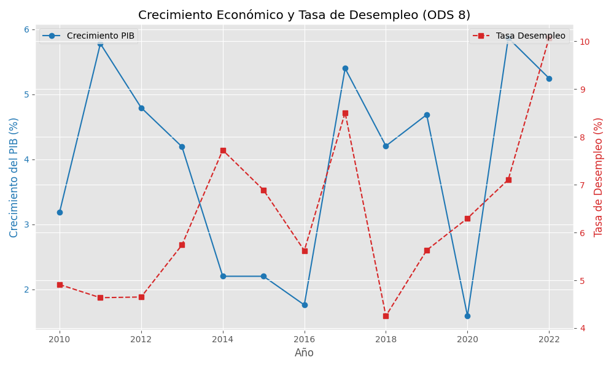
Gráfico generado con Python (Biblioteca matplotlib)
Industria, innovación e infraestructura
Este ODS apunta al progreso tecnológico para alcanzar los objetivos medioambientales. Describe que sin tecnología e innovación no se promoverá la industria y sin ella no habrá desarrollo. Cree, además, necesario invertir en alta tecnología para la producción de manufacturas y mejorar la telefonía móvil para que las personas puedan estar conectadas.
Reducción de las desigualdades
Naciones Unidas pretende con este ODS lograr políticas universales para las poblaciones más desfavorecidas y marginadas, con especial hincapié en las exportaciones de los países en vía de desarrollo o las innovaciones en tecnología que reduzcan los costes de transferir dinero por parte de los trabajadores migrantes. Entre las metas de este ODS para 2030 se persigue, por ejemplo, mantener el crecimiento de los ingresos del 40% de la población más pobre a una tasa superior a la media nacional.
Ciudades y comunidades sostenibles
Cerca de 5000 millones de personas vivirán en ciudades para 2030. Por este motivo, este ODS busca mejorar la planificación y gestión urbanas para que las urbes sean más inclusivas, seguras, resilientes y sostenibles. En definitiva, apuesta por un futuro con ciudades de oportunidades que permitan acceso a energía, vivienda, transporte y más facilidades para los ciudadanos.
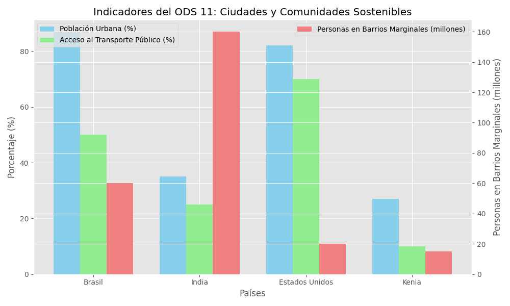
Gráfico generado con Python (Biblioteca matplotlib)
Producción y consumo responsable
Este ODS defiende por el uso eficiente de los recursos y la energía, infraestructuras y empleos ecológicos para fomentar el consumo responsable y la producción sostenible que permita hacer más con menos, sin contaminar ni el aire ni el agua ni el suelo. Aboga, por tanto, que toda la cadena de suministro, del productor al consumidor, participe en este nuevo proceso de producción sostenible.
Páis
Generación de residuos per cápita (kg/año)
Tasa de Reciclaje (%)
Consumo de Recursos Naturales (toneladas/persona)
Porcentaje de Productos Sostenibles (%)
Suecia
466
50
11.7
60
Alemania
455
56
9.9
50
China
520
24
6.1
30
Brasil
320
30
4.4
40
India
170
28
2.8
25
Datos según la ONU
Acción por el clima
El cambio climático producirá un impacto negativo en las economías de todo el mundo. El clima y los niveles del mar aumentan, con situaciones más extremas que conviven con los niveles más altos de emisiones de dióxido de carbono (CO2). Por ese motivo, los países que firmaron el Acuerdo de París se comprometieron a limitar el aumento de la temperatura global a menos de 2 grados. Este ODS, por tanto, se traza como algunas de sus metas incorporar políticas contra el cambio climático en las políticas nacionales o mejorar la educación ambiental.
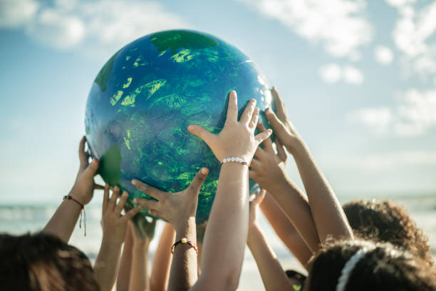
Vida submarina
El fin de este ODS es lograr que los océanos, mares y recursos marinos, como fuentes de vida, comercio y transporte sean administrados de manera efectiva, y que cuenten con recursos suficientes y leyes que reduzcan la sobrepesca, la contaminación marina y la acidificación de los océanos.
Vida de ecosistemas terrestres
Frente a la pérdida de biodiversidad y el avance de la desertificación, este ODS promueve la gestión sostenible de los bosques (como garantes de la vida), la recuperación y conservación de ecosistemas y la lucha contra la deforestación, la caza furtiva y el tráfico de especies protegidas. Los acuerdos internacionales firmados ahondan en estas medidas para favorecer el uso de los recursos de forma equitativa y la inversión financiera de apoyo a la biodiversidad.
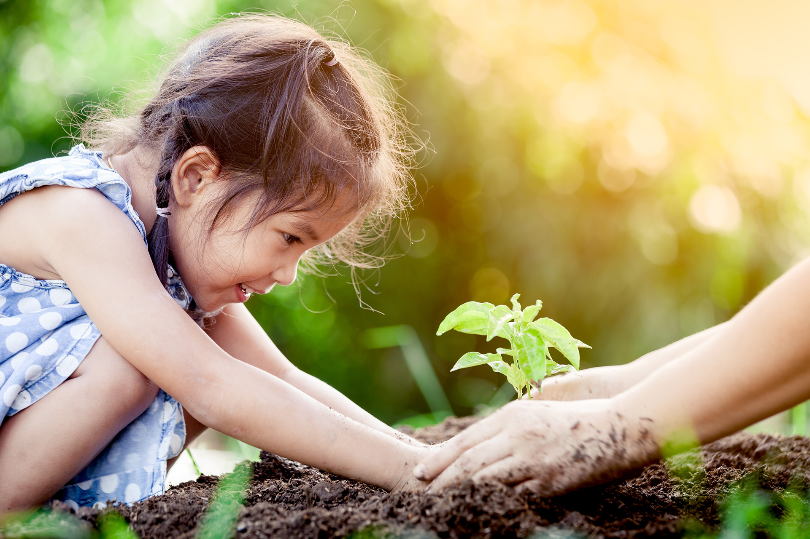
Paz, justicia e instituciones sólidas
Este objetivo también promueve el acceso a la justicia para todos y crear instituciones eficaces, responsables e inclusivas a todos los niveles. Aborda la creación de leyes y presupuestos que contrarresten las amenazas de homicidios, violencia sexual o contra los niños o la trata de personas. Se busca, por tanto, lograr sociedades pacíficas y más justas a través de instituciones más responsables e inclusivas.
Indicador
Meta
Valor actual (%)
Objetivo a alcanzar (%)
Tasa de homicidios
Reducir la tasa de homicidios a menos de 7 por cada 100.000 habitantes
5.3
0.5
Acceso a la justicia
Garantizar el acceso equitativo a la justicia para todos
85
100
Confianza en las instituciones públicas
Aumentar la confianza en las instituciones públicas
60
80
Porcentaje de personas víctimas de corrupción
Reducir la corrupción en todas sus formas
25
0
Porcentaje de personas que confían en la policía
Aumentar la confianza en las fuerzas de policía
45
70
Datos según la ONU
Alianzas para lograr objetivos
Este ODS describe la necesidad de alianzas entre gobiernos, el sector privado y la sociedad civil para poner en el centro a las personas y al planeta para, entre otras cosas, financiar, prestar servicios y crear políticas sobre energías sostenibles, infraestructuras, transportes y comunicaciones desde lo global, a lo nacional y de ahí a lo local.
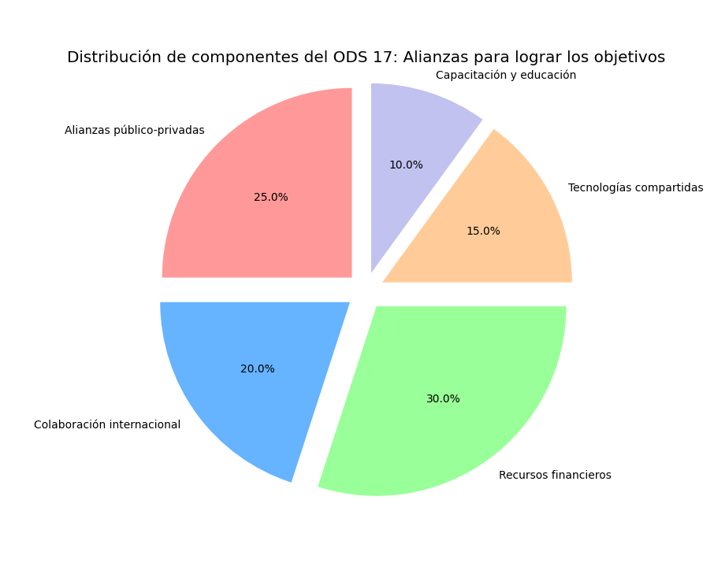
Gráfico generado con Python (Biblioteca matplotlib)